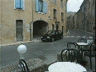
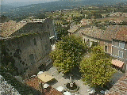
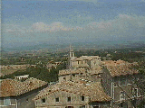

|
 カフェ・セザールにて

 | 「南仏プロヴァンスの12か月」には山羊レース会場として登場した村。レースのスタート地点のカフェ・セザールから村のはずれまで、車だとものの５分で通り抜けてしまう。 “テラス ”と呼ばれる高台に登るとリュベロンの谷に広がるのどかな村々を一望できる。 教会の鐘、畑を耕すトラクタの音、イワツバメの鳴き声が響きわたり、時間が静かに流れている村だった。 ピーター・メイルの住んでいたメネルブはもちろん、サド侯爵の城跡で有名なラコスト(かの渋澤龍彦も訪れたという）もみわたせる。 |